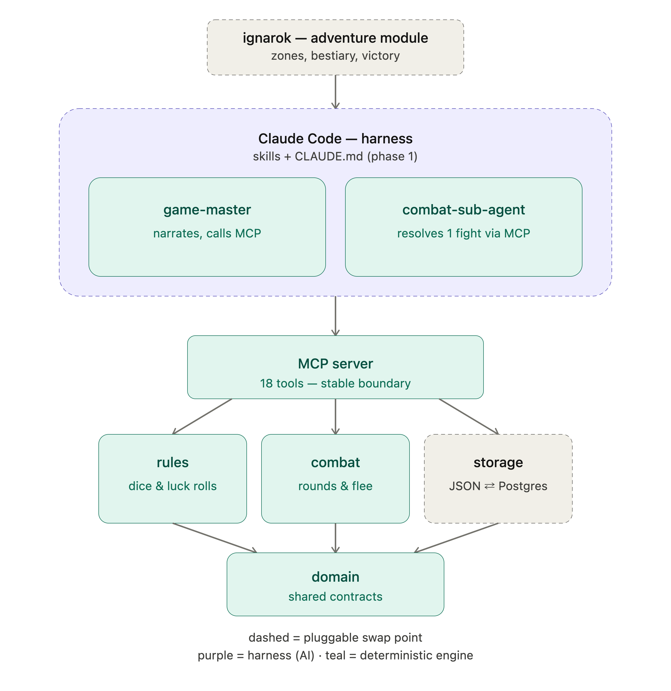
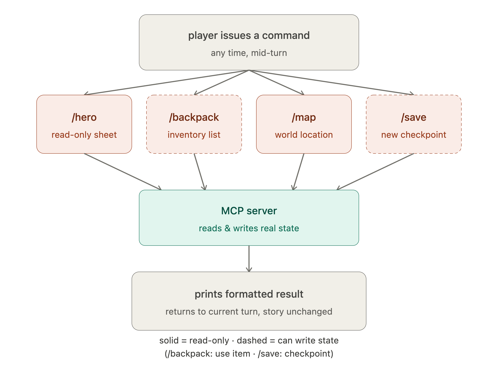

A solo-play Fighting Fantasy–style gamebook engine where Claude acts as the game master and narrator, but every dice roll, stat change, and combat outcome is decided by a local MCP server. The AI improvises the story. The engine arbitrates reality.
The Concept
Classic gamebooks (Fighting Fantasy, Lone Wolf) are books where you make choices, roll dice, and track your own stats. The engine recreates that experience in Claude Code — but with one hard rule that shapes the entire architecture:
The AI never invents a number and never rolls a die in prose. Every random outcome, stat change, and combat result goes through the MCP server. Claude narrates what the engine returns — nothing more.
This separation is the whole point: the AI handles language and story. The engine handles math and state. Swap the AI for a different model tomorrow — the rules stay identical. Swap the adventure module — the engine never changes.

dashed = pluggable swap point · purple = harness (AI) · teal = deterministic engine · click to zoom ↗
The Harness — Skills
Click any card to see it in action inside Claude Code.
The Commands — Incantations
Four commands that read or write state directly via MCP — no story impact. Available at any time, even mid-combat. Click any card to see the output.

solid = read-only · dashed = can write state · click to zoom ↗
/hero
Print the full character sheet — skill, stamina, luck, gold, provisions, inventory — straight from MCP state. Never a narrated value.
/backpack
List inventory, gold and provisions. Optionally use or consume an item — the state change goes through MCP, not prose.
/map
Show current location and every visited zone from real world state. Read-only — changes nothing, reflects the engine exactly.
/save
Checkpoint current progress via MCP. Accepts an optional slot name. Confirms with the slot identifier on success.
Claim the Engine
Begin Your Adventure
Once the engine is cloned and Claude Code is open in the directory, the MCP server is live. Type the first incantation:
/game-master
Claude reads the ignarok lore pack and checks MCP for an existing character.
If no hero exists, the engine rolls your attributes via MCP — not in prose.
Claude narrates the opening of the Grey Mountain. The adventure begins at §1.
"You stand at the foot of the Grey Mountain. The wind smells of ash and old iron. Turn to §1."
← Return to the GrimoireHosted in the dungeons of GitHub Pages